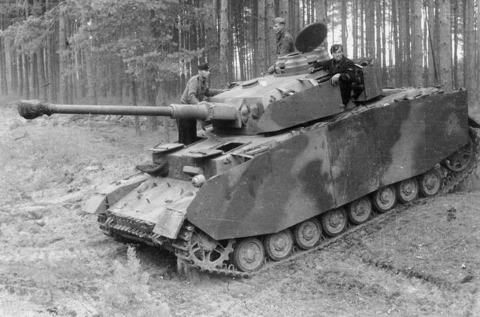

OVOM STRANICOM POTIČE SE ISTRAŽIVANJE POVIJESTI!
Svaka čast, našao si stranicu sa našim kontaktom! Očito nešto želiš podjeliti sa nama i to je SUPER! Možeš nam se javiti mailom na: info@enciklopedijaoklopa.hr. Hvala ti puno!
Možda te zanima:
Panzerkampfwagen IV - Panzer IV punim imenom Panzerkampfwagen IV je bio srednji tenk razvijen u nacističkoj Njemačkoj kasnih 1930-ih. Panzer IV činio je okosnicu njemačkih oklopnih snaga u Drugom svjetskom ratu.
T-90 - T-90 je glavni borbeni tenk ruske vojske. Napravljen je spojem najboljih karakteristika tenka T-72 i T-80. Po svojim karakteristikama T-90 spada u najmodernije tenkove u svijetu, ali ima i nekoliko bitnih mana kao što je koncept smještaja streljiva ispod kupole koji je izuzetno opasan (što se pokazalo u Čečeniji i u ratovima na prostoru bivše SFRJ). Prednosti T-90 u odnosu na zapadne tenkove su mogućnost lansiranja protuoklopnih vođenih raketa iz topa, niska silueta, mala masa, odlična pokretljivost i prohodnost, učinkovit reaktivni oklop, posjedovanje samozaštitnog sustava Štora, napredni sustav upravljanja paljbom (noviji modeli) i niža cijena.

Renault FT – (često pogrešno nazivaju Renault FT-17) je bio francuski laki tenk u Prvom svjetskom ratu. Zbog svog revolucionarnog dizajna smatra se prvim pravim tenkom i pretečom svih današnjih tenkova. Bio je prvi tenk koji je imao kupolu koja se mogla okretati za svih 360 stupnjeva. Proizveden je u velikom broju primjeraka, a neki su bili u službi i tijekom Drugog svjetskog rata. Nazvan je "tenk pobjede".